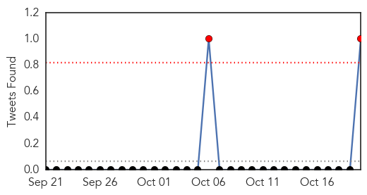
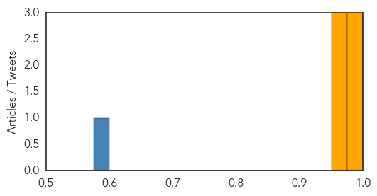
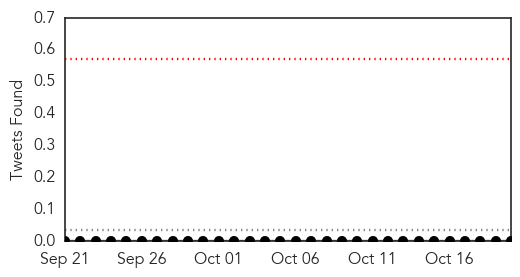
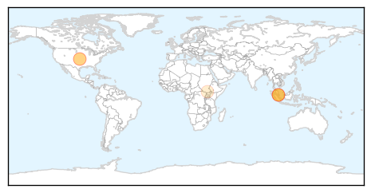
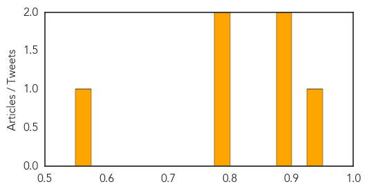

MERS
30-Day Web Trend
0 alerts, 0 warnings

30-Day Twitter Trend
0 alerts, 0 warnings

Article Locations

Article Confidences
Top Articles:
- 0.999
- MERS sickens one more in Saudi Arabia
- 0.990
- World Health Organization chief says US, Saudi Arabia discussing MERS vaccine
- 0.975
- U.S. backs FAO efforts to combat global animal disease threats with $87 million - World
- 0.955
- U.S. backs FAO efforts to combat global animal disease threats with $87 million
- 0.953
- News Article: U.S. backs FAO efforts to combat global animal disease threats with $87 million
- 0.951
- U.S. backs FAO efforts to combat global animal disease threats with $87 million
Top Tweets:
- 0.657
- AFD blog `Saudi MOH Reports 1 MERS Case In Hofuf' MERS-CoV https://t.co/mSBcQkTUjH
- 0.595
- RT: If U are in contact with infected camels do U get MERS-CoV infection more often than if U have no contact? A-huh https://t…
Hepatitis
30-Day Web Trend
4 alerts, 6 warnings

30-Day Twitter Trend
0 alerts, 0 warnings

Article Locations
Article Confidences
Top Articles:
- 0.948
- The Online Citizen
- 0.887
- More than 3,000 dental patients warned they may have been exposed to blood-borne viruses like HIV and hepatitis
- 0.879
- Hepatitis C virus infection may be 'contributing factor' in one death, news, Health News, AsiaOne YourHealth
- 0.798
- SGH files police report to ascertain if foul play involved in hep C spread; 2 US experts appointed to committee, Health News & Top Stories
- 0.789
- Thousands of dental patients offered HIV and hepatitis tests after dentist reused surgery equipment
- 0.564
- Global Emergency Overview Snapshot 14 - 20 October 2015 - World
Top Tweets:
-
No tweets found for Oct 20, 2015